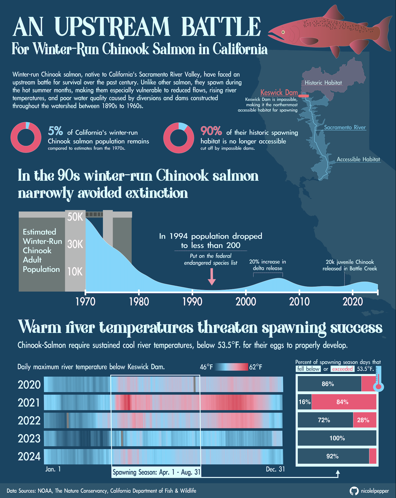
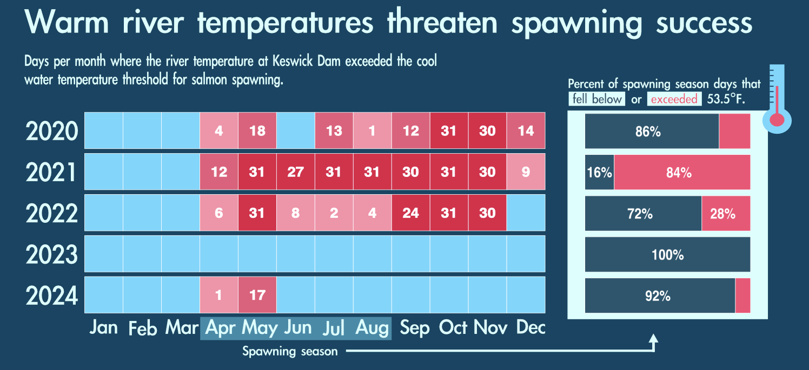
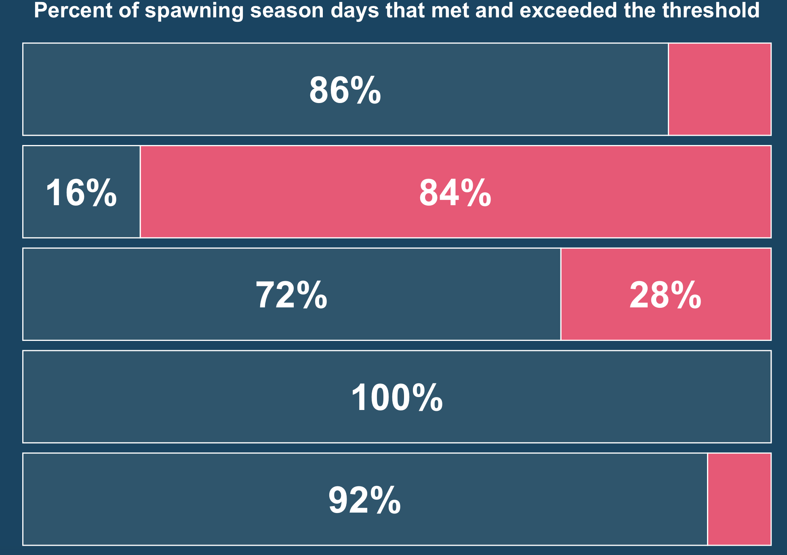

Winter-Run Chinook salmon, found only in California’s Upper Sacramento River Valley, have been particularly hit hard by these environmental challenges because they uniquely spawn during the hot summer months when river and ambient temperatures are often at their hottest. Cool river temperatures, below 53.5°F, are critical for the successful maturation and survival of their eggs.
Every year from November to August, winter-run Chinook, embark on an upstream journey from the San Francisco Bay to the upper Sacramento River Valley. Today, salmon travel as far north as Keswick Dam, which completely blocks access to their historic spawning grounds. In the early 1990s winter-run Chinook narrowly escaped extinction. Their persistent battle to survive has inspired my infographic, “An Upstream Battle for Winter-Run Chinook in California”.

The Design Process:
With this infographic, I wanted to explore the following questions:
1) How have dams impacted winter-run Chinook salmon habitat?
2) How has historic Chinook salmon abundance changed over time for winter-run Chinook? (spoiler: winter run chinook salmon are on the endangered species list)
3) How does stream water temperature impact Chinook salmon abundance for winter-run salmon?
My goal for the infographic is to raise awareness about the challenges that salmon in Northern California face, particularly for winter-run Chinook salmon, and to inspire community engagement and approval for conservation initiatives that support this critical species. My intended audience for the piece are the general public, community stakeholders, conservation and fisheries managers, as well as environmental advocates.
Boundary of the Sacramento-San Joaquin River Delta and a line feature for the Sacramento River from [NOAA Fisheries’ Salmon Critical Habitat database for the West Coast Region] (https://www.fisheries.noaa.gov/resource/map/critical-habitat-maps-and-gis-data-west-coast-region)
Point feature for Keswick Dam from the i17 California Jurisdictional Dams dataset from California Open Data Portal
For the habitat donut chart:
I also gathered other statistics on the impact of dams on Chinook salmon habitat from NOAA Fisheries.
Salmon Population Data:
For the stream & donut charts:
I used a salmon population dataset from The Nature Conservancy. This dataset provides annual estimates of adult population size for various salmon species, including winter-run Chinook, across California.
Stream Temperature Data:
For the river heatmap:
I used stream temperature data from California Department of Water Resources at the California Data Exchange Center. I retrieved data from the Kewsick site, right below Keswick Dam, which is now a critical spawning location for Chinook, since it is the furthest north reach that is accessible for fish. The dataset provides hourly stream temperature readings from 2020 - present.
The Design Choices:
Colors:
For my color palette, I selected a combination of shades of blue and reddish-pink. I selected blue, because the color is a good universal representation water, which is an important theme of my piece. The pink is inspired by the distinctive reddish-pink hue that male Chinook salmon often develop during spawning - though my choice of hot pink is intentionally more vibrant to add visual interest. I also prioritized accessibility by selecting color hues and saturation levels that are colorblind-friendly.
Font:
I chose Brief River, by Green Adventure Studio, for my headers and Apple Li Gothic, by Apple, for my body text. I selected Brief River because I liked how it was chunky and nastalgic. Being a serif font, I felt like it was a great fit for my river-themed graphic. I selected Li Gothic for my body text because I liked how it was minimal, balanced, and legible.
Graphic Form:
For my infographic design & layout, I built everything around the central themes of salmon and rivers. The graphic form that I centered my piece around is the filled-area plot of winter-run Chinook population from the 1970s to 2023. The dramatic decline in population, illustrated by the graph immediately stuck me – and given the theme of the piece, I was inspired to shape it like a flowing river by using a filled blue area.
Through further research, I added identified several key historic events that I wanted to highlight using text annotations. These include when the population dropped below 200 in the early 1990s, a temporary rebound in population when there was a 5-year period increased delta release flows, and the Battle Creek Restoration Project which released approximately 20K juvenile Chinook into Battle Creek, a tributary of the Sacramento River. To visually reinforce the connection between dams and reduced flows, I incorporated an illustration of a dam, making it appear that the graph is water flowing out of the dam.
An early concept for what I wanted my final infographic to look like.
The Design Process:
One of the biggest challenges was balancing the complexity of the story with visual appeal. I wanted to include all the significant data and historical context without overwhelming the viewer. It took me several iterations to craft a visual narrative, guiding the viewers naturally from one element to the next, while building a clear and cohesive way.
The most difficult element for me was figuring out how to incorporate the river temperature data. I experimented with several variations of heatmaps. Initially, I felt like the continuous heatmap - the style that is in my final infographic - was too detailed, so I simplified the graph by aggregating and summarizing the days that days-per-month that exceeded the temperature threshold of 53.3°F in a calendar-style heatmap.

Calendar-style heatmap.
However, even though the calendar-style graph looked simpler it took more time to interpret and lost key details due to aggregation. After discussing it with my peers, I ended up deciding to revert to the continuous heatmap, which ultimately conveyed the data more effectively. I ended up spacing out the bars for the months, which helped reduce the visual intensity of graph.
I’m especially proud of the salmon population over time data viz, which was the first graph that I put together with the data and ended up being the center piece for the infographic. Although it’s a simple area chart, I think the annotations help add clarity by highlighting the key takeaways. Additionally, by adding the dam illustration and styling the graph in a way that makes it look like water flowing from the dam, adds visual impact and helps tie together the story.
Two of the key takeaways that I want viewers to gather from my infographic include:
Winter-Run Chinook salmon populations have faced a severe decline. In the 90s, Winter run Chinook narrowly avoided extinction, as their population fell below 200, which earned them a spot on the endangered species list.
Their battle for survival continues. Warm river temperatures continue to threaten spawning success, as river temperatures in recent years, regularly exceed the temperature threshold critical for the successful maturation and survival of their eggs.
The Code:
Below is the code for used to build the individual elements in my infographic. All of the graphic elements were created in R. After designing the graphs, I exported them as .pdfs imported them into Affinity for final formatting and to incorporate custom illustrations into the final piece.
# ---- Create a map of Chinook Salmon Habitat in Northern California ---ggplot() +# Load CA outlinegeom_sf(data = ca_state,fill = primary_palette["river"],color =NA) +# Load chinook habitat boundariesgeom_sf(data = habitat,aes(fill = Class),fill =c(primary_palette["salmon"], primary_palette["cascade"]),color =c(alpha(primary_palette["salmon"], 0.6),alpha(primary_palette["cascade"], 0.6)),alpha =0.3) +# Load Sacramento Rivergeom_sf(data = river,color = primary_palette["cascade"]) +# Load SF Baygeom_sf(data = bay,fill = primary_palette["ocean"],color = primary_palette["ocean"]) +# Load Keswick Damgeom_sf(data = dams,color = primary_palette["crimson"]) +# Add river annotationannotate("text",x =1, y =1, label ="The Sacramento River",color = primary_palette["cascade"],fontface ="bold",size =2.5) +# Define Albers Equal Area proj for Californiacoord_sf(crs =st_crs(3311)) +# Define themetheme_void() +theme(plot.background =element_rect(fill = primary_palette["ocean"]) )
Donut Charts
Create Donut Chart of Chinook Population
# Define chinook population proportion, based on 2023 and 1970 pop estimatespop_prop <-data.frame(category =c("Remaining", "Historic Pop"),value =c(5, 95))# Create the donut chartggplot(pop_prop, aes(x =1, # Set x to a constant valuey = value,fill = category)) +geom_bar(stat ="identity",width =1,color ="white") +# Bar borderscoord_polar("y", start =0) +# Transform to polar coordinates# Define the width of the donutxlim(0.2,2.5) +scale_fill_manual(values =c( "#F94B74", "#65D8FE")) +labs(title ="Only 5% of Historic Population Remains") +theme_void() +theme(plot.title =element_text(face ="bold",color = primary_palette["white"],size =16,hjust =0.5),panel.grid =element_blank(),axis.ticks =element_blank(),plot.background =element_rect(fill = primary_palette["ocean"],color =NA),legend.position ="none" )
Create Donut Chart of Access to Historic Spawning Grounds
# Define habitat proportion, based estimates from CalFish and Boydstun 2001pop_prop <-data.frame(category =c("Remaining", "Historic Pop"),value =c(10, 90))# Create the donut chartggplot(pop_prop, aes(x =2,y = value,fill = category)) +geom_bar(stat ="identity",width =1,color ="white") +coord_polar("y", start =0) +# Define width and height of chartxlim(0.2,2.5) +scale_fill_manual(values =c( "#F94B74", "#65D8FE")) +labs(title ="90% of historic spawning habitat\nis no longer accessible") +theme_void() +theme(plot.title =element_text(face ="bold",color = primary_palette["white"],size =16,hjust =0.5),panel.grid =element_blank(),axis.ticks =element_blank(),plot.background =element_rect(fill = primary_palette["ocean"],color =NA),legend.position ="none" )
Stream Chart of WR-Chinook Population Over Time
Prep Data
# Clean and filter data for winter-run chinookwinter_salmon <- salmon_ca |>filter(c_name =="Chinook") |>filter(r_timing =="Winter-run Chinook") |> dplyr::group_by(y_end, r_timing) |> dplyr::summarise(abun_estimate =sum(abun_estimate, na.rm =TRUE),.groups ="drop")
Create Stream Chart
# --- Filled stream chart for winter-run salmon abundance ----# Define plotggplot(data = winter_salmon,aes(x = y_end,y = abun_estimate,fill = r_timing)) +# Add stream geometry for salmon abundance over timegeom_stream(type ="ridge") +# Define color schemescale_fill_manual(values ="#65D8FE") +# Label y axis with K for thousandsscale_y_continuous(labels = scales::label_number(scale =1e-3,suffix ="K"),breaks =c(10e3, 30e3, 50e3)) +# ---- Add annotations ----# Add a bracket for increased delta release ----geom_segment(aes(x =2000, xend =2000,y =9500, yend =11000),color = primary_palette["cascade"],size = .25) +geom_segment(aes(x =2006, xend =2006,y =9500, yend =11000),color = primary_palette["cascade"],size = .25) +geom_segment(aes(x =2000, xend =2006,y =11000, yend =11000),color = primary_palette["cascade"],size = .25) +# Add red arrow for 1994 - population less than 200 ----annotate("text",x =1993, y =5000, label ="↓",color = primary_palette["salmon"],size =8) +# Add population annotation for 1994annotate("text", x =1993, y =16000, label ="Population Drops\nto less than 200",color = primary_palette["white"],size =3,fontface ="bold") +# Add endangered annotation for 1994annotate("text", x =1993, y =10000, label ="Put on the endangered\n species list",color = primary_palette["white"],size =2.5) +# Add battle creek annotation for 2018annotate("text",x =2018, y =9000, label ="↓",color = primary_palette["white"],size =8,fontface ="bold") +# Add annotation for 2018annotate("text",x =2018, y =15000, label ="20k juvenile Chinook\nreleased in Battle Creek",color = primary_palette["white"],size =2.5) +# Add bracket annotationannotate("text",x =2003, y =15000, label ="20% Increase\nin Delta Release",color = primary_palette["white"],size =2.5) +labs(title ="In the 90s winter-run Chinook narrowly avoided extinction",y ="Estimated\nWinter-Run\nChinook\nAdult\nPopulation",fill ="Return Type") +# Define themetheme_minimal() +theme(plot.title =element_text(face ="bold",color = primary_palette["white"],size =12),axis.text.x =element_text(size =10,face ="bold",color = primary_palette["white"]),axis.text.y =element_text(size =10,face ="bold",color = primary_palette["white"]),axis.title.y =element_text(size =11,face ="bold",color = primary_palette["white"],angle =0,vjust = .5),axis.title.x =element_blank(),panel.grid =element_blank(),axis.ticks =element_blank(),plot.background =element_rect(fill = primary_palette["ocean"],color =NA),legend.position ="none" )
Stream Temperature Heatmap
Prep Data
# ---- Calculate average and max daily stream temperature ----daily_avg_temp_kes20 <- kes_stream_temp |>group_by(day_of_year, year) |>summarise(avg_temp =mean(value, na.rm =TRUE),max_temp =max(value, na.rm =TRUE)) |>ungroup()
Create Heatmap
# ---- Create heatmap of Keswick stream temperature by day of year ----ggplot(daily_avg_temp_kes20,aes(x = day_of_year,y =factor(year), # facet by yearfill = max_temp)) +geom_tile() +coord_cartesian(clip ="off") +# Add a box around April 15 to August 31geom_rect(aes(xmin =as.numeric(strptime("04-15", "%m-%d")$yday),xmax =as.numeric(strptime("08-31", "%m-%d")$yday),ymin =-Inf,ymax =Inf),color = primary_palette["light-blue"],fill =NA,size =1.5) +# Add a small rectangle below the spawning season datesgeom_rect(aes(xmin =as.numeric(strptime("04-15", "%m-%d")$yday),xmax =as.numeric(strptime("08-31", "%m-%d")$yday),ymin =0,ymax = .4),fill = primary_palette["light-blue"],color = primary_palette["light-blue"],size =1) +# Label spawning seasongeom_text(aes(x = (as.numeric(strptime("04-15", "%m-%d")$yday +1) +as.numeric(strptime("08-31", "%m-%d")$yday +1)) /2,y =0.25,label ="Spawning Season: Apr. 1 - Aug. 31"),color = primary_palette["ocean"],fontface ="bold",size =3) +scale_fill_gradientn(colors = temp_palette) +scale_y_discrete(limits =rev(levels(factor(daily_avg_temp_kes20$year)))) +labs(title ="Daily maximum river temperature below Keswick Dam.") +theme_void() +theme(plot.title =element_text(color = primary_palette["white"],face ="bold",size =16),axis.text.y =element_text(color = primary_palette["white"],face ="bold",size =20), axis.ticks.y =element_blank(),plot.background =element_rect(fill = primary_palette["ocean"],color =NA),legend.text =element_text(color = primary_palette["white"],size =12),legend.title =element_blank(),legend.position ="top",legend.justification =c(1, 1))
Stacked Bar Chart
Prep Data
# ---- Calculate days exceeding the threshold of 53.5°F ----# Define thresholdthreshold <-53.5# Flag days where any hourly observation exceeds the thresholddaily_exceedance <- kes_stream_temp |>group_by(year, month, obs_date) |>summarise(exceed_threshold =as.integer(any(value > threshold,na.rm =TRUE))) |>ungroup()# ---- Filter data for spawning season (April - August) ----spawning_exceedance <- daily_exceedance |>filter(month %in%c("Apr", "May", "Jun", "Jul", "Aug")) |>group_by(year) |>summarise(exceed_days =sum(exceed_threshold),total_days =n()) |>mutate(non_exceed_days = total_days - exceed_days) |>pivot_longer(cols =c(exceed_days, non_exceed_days), names_to ="exceed_type", values_to ="days") |>mutate(proportion = days / total_days)
Create Stacked Bar Chart
# ---- Stacked bar chart showing proportion per year that exceeded or didn't ----ggplot(spawning_exceedance, aes(y =factor(year,levels =rev(unique(year))), x = proportion, fill = exceed_type)) +geom_bar(stat ="identity",color = primary_palette["white"],size =0.5) +# Add labels for percentagegeom_text(aes(label =ifelse(round(proportion *100) >=15, paste0(round(proportion *100), "%"), "")),position =position_stack(vjust =0.5), color = primary_palette["white"], fontface ="bold",size =12) +scale_fill_manual(name ="Temperature Status", values =c("exceed_days"="#F94B74", "non_exceed_days"="#20566E")) +scale_x_continuous(labels = scales::percent) +labs(title ="Percent of spawning season days that met and exceeded the threshold") +theme_minimal() +theme(plot.title =element_text(face ="bold",color = primary_palette["white"],size =20,hjust =0.5),axis.text.x =element_blank(),axis.text.y =element_blank(),axis.title.x =element_blank(),axis.title.y =element_blank(),panel.grid =element_blank(),axis.ticks =element_blank(),plot.background =element_rect(fill = primary_palette["ocean"],color =NA),legend.position ="none")

Final Infographic:
Acknowledgments:
This assignment was created for UCSB MEDS, EDS 240 - Data Visualization & Communication. Thank you to our professor Sam Shanny-Csik and teaching assistants Annie Adams and Sloane Stephenson for their wisdom and support throughout the class.
References:
California Department of Education. (n.d.). California State Boundary. Retrieved from https://hub.arcgis.com/datasets/ca7b47512a2a442fbfa039bded0b6eaf_0/explore?uiVersion=content-views
NOAA Fisheries. (n.d.). Salmon Critical Habitat Maps and GIS Data - West Coast Region. Retrieved from https://www.fisheries.noaa.gov/resource/map/critical-habitat-maps-and-gis-data-west-coast-region
NOAA Fisheries & California Department of Fish and Wildlife. (n.d.). Winter-run Chinook Salmon Habitat Boundary [ds800]. Retrieved from https://apps.wildlife.ca.gov/bios6/?al=ds800
California Open Data Portal. (n.d.). i17 California Jurisdictional Dams Dataset. Retrieved from https://data.ca.gov/dataset/i17-california-jurisdictional-dams
NOAA Fisheries. (n.d.). Recovery through Reintroductions: California’s Central Valley Salmon. Retrieved from https://www.fisheries.noaa.gov/west-coast/endangered-species-conservation/recovery-through-reintroductions-californias-central-valley-salmon
The Nature Conservancy. (n.d.). Statewide Status of Salmon Species in California. Retrieved from https://casalmon.org/statewide-status/#all-species
California Department of Water Resources. (n.d.). California Data Exchange Center: Stream Temperature Data. Retrieved from https://cdec.water.ca.gov/dynamicapp/wsSensorData